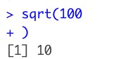
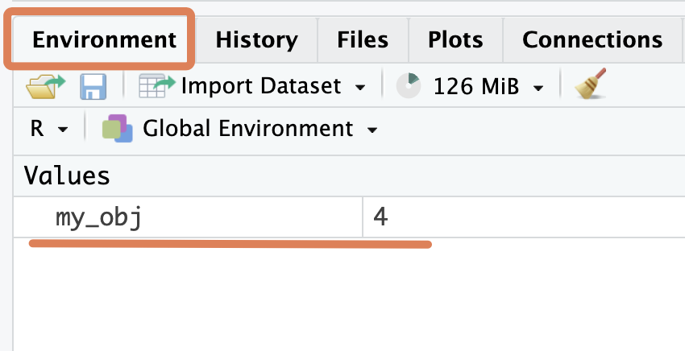
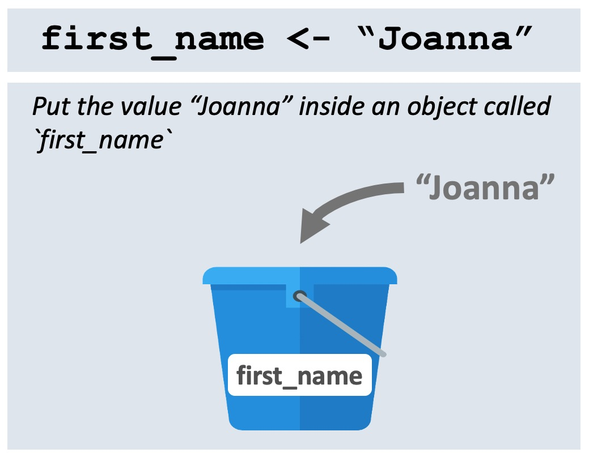
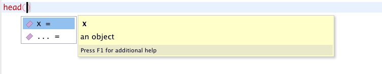
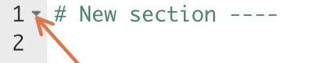

2 + 2[1] 42 - 2[1] 02 * 2 # two times two [1] 42 / 2 # two divided by two[1] 12 ^ 2 # two raised to the power of two[1] 42 + 2 * 2 # this is evaluated following the order of operations[1] 6sqrt(100) # square root[1] 10You can write comments in R.
You can create section headers in RStudio.
You know how to use R as a calculator.
You can create, overwrite and manipulate R objects.
You understand the basic rules for naming R objects.
You understand the syntax for calling R functions.
You know how to nest multiple functions.
You can use install and load add-on R packages and call functions from these packages.
In the last lesson, you learned how to use RStudio, the wonderful integrated development environment (IDE) that makes working with R much easier. In this lesson, you will learn the basics of using R itself.
To get started, open RStudio, and open a new script with File > New File > R Script on the RStudio menu.

Next, save the script with File > Save on the RStudio menu or by using the shortcut Command/Control + S . This should bring up the Save File dialog box. Save the file with a name like “coding_basics”.
You should now type all the code from this lesson into that script.
R works as a calculator, and obeys the correct order of operations. Type and run the following expressions and observe their output:
2 + 2[1] 42 - 2[1] 02 * 2 # two times two [1] 42 / 2 # two divided by two[1] 12 ^ 2 # two raised to the power of two[1] 42 + 2 * 2 # this is evaluated following the order of operations[1] 6sqrt(100) # square root[1] 10The square root command shown on the last line is a good example of an R function, where 100 is the argument to the function. You will see more functions soon.
We hope you remember the shortcut to run code!
To run a single line of code, place your cursor anywhere on that line, then hit Command + Enter on macOS, or Control + Enter on Windows.
To run multiple lines, drag your cursor to highlight the relevant lines then again press Command/Control + Enter.
Question 2
In the following expression, which sign is evaluated first by R, the minus or the division?
2 - 2 / 2[1] 1R does not care how you choose to space out your code.
For the math operations we did above, all the following would be valid code:
2+2[1] 42 + 2[1] 42 + 2[1] 4Similarly, for the sqrt() function used above, any of these would be valid:
sqrt(100)[1] 10sqrt( 100 )[1] 10## you can even space the command out over multiple lines
sqrt(
100
)[1] 10But of course, you should try to space out your code in sensible ways. What exactly is “sensible”? Well, it may be hard for you to know at the moment. Over time, as you read other people’s code, you will learn that there are certain R conventions for code spacing and formatting.
In the meantime, you can ask RStudio to help format your code for you. To do this, highlight any section of code you want to reformat, and, on the RStudio menu, go to Code > Reformat Code, or use the shortcut Shift + Command/Control + A.
Stuck on the + sign
If you run an incomplete line of code, R will print a + sign to indicate that it is waiting for you to finish the code.
For example, if you run the following code:
sqrt(100you will not get the output you expect (10). Rather the console will sqrt( and a + sign:

R is waiting for you complete the closing parenthesis. You can complete the code and get rid of the + by just entering the missing parenthesis:
)
Alternatively, press the escape key, ESC while your cursor is in the console to start over.
When you run code as we have been doing above, the result of the command (or its value) is simply displayed in the console—it is not stored anywhere.
2 + 2 # R prints this result, 4, but does not store it [1] 4To store a value for future use, assign it to an object with the assignment operator, <- :
my_obj <- 2 + 2 # assign the result of `2 + 2 ` to the object called `my_obj`
my_obj # print my_obj[1] 4The assignment operator, <- , is made of the ‘less than’ sign, < , and a minus, -. You will use it thousands of times over your R lifetime, so please don’t type it manually! Instead, use RStudio’s shortcut, alt + - (alt AND minus) on Windows or option + - (option AND minus) on macOS.
Also note that you can use the equals sign, =, for assignment.
my_obj = 2 + 2 But this is not commonly used by the R community (mostly for historical reasons), so we discourage it too. Follow the convention and use <-.
Now that you’ve created the object my_obj, R knows all about it and will keep track of it during this R session. You can view any created objects in the Environment tab of RStudio.

So what exactly is an object? Think of it as a named bucket that can contain anything. When you run the code below:
my_obj <- 20you are telling R, “put the number 20 inside a bucket named ‘my_obj’”.

Once the code is run, we would say, in R terms, that “the value of object called my_obj is 20”.
And if you run this code:
first_name <- "Joanna"you are instructing R to “put the value ‘Joanna’ inside the bucket called ‘first_name’”.

Once the code is run, we would say, in R terms, that “the value of the first_name object is Joanna”.
Note that R evaluates the code before putting it inside the bucket.
So, before when we ran this code,
my_obj <- 2 + 2R firsts does the calculation of 2 + 2, then stores the result, 4, inside the object.

Question 3
Consider the code chunk below:
result <- 2 + 2 + 2What is the value of the result object created?
A. 2 + 2 + 2
B. numeric
C. 6
So far, you have been working with very simple objects. You may be thinking “Where are the spreadsheets and datasets? Why are we writing my_obj <- 2 + 2? Is this a primary school maths class?!”
Be patient.
We want you to get familiar with the concept of an R object because once you start dealing with real datasets, these will also be stored as R objects.
Let’s see a preview of this now. Type out the code below to download a dataset on Ebola cases that we stored on Google Drive and put it in the object ebola_sierra_leone_data.
ebola_sierra_leone_data <- read.csv("https://tinyurl.com/ebola-data-sample")
ebola_sierra_leone_data # print ebola_data id age sex status date_of_onset date_of_sample district
1 167 55 M confirmed 2014-06-15 2014-06-21 Kenema
2 129 41 M confirmed 2014-06-13 2014-06-18 Kailahun
3 270 12 F confirmed 2014-06-28 2014-07-03 Kailahun
4 187 NA F confirmed 2014-06-19 2014-06-24 Kailahun
5 85 20 M confirmed 2014-06-08 2014-06-24 KailahunThis data contains a sample of patient information from the 2014-2016 Ebola outbreak in Sierra Leone.
Because you can store datasets as objects, its very easy to work with multiple datasets at the same time.
Below, we import and view another dataset from the web:
diabetes_china <- read.csv("https://tinyurl.com/diabetes-china")Because the dataset above is quite large, it may be helpful to look at it in the data viewer:
View(diabetes_china)Notice that both datasets now appear in your Environment tab.
Rather than reading data from an internet drive as we did above, it is more likely that you will have the data on your computer, and you will want to read it into R from your there. We will cover this in a future lesson.
Later in the course, we will also show you how to store and read data from a web service like Google Drive, which is nice for easy portability.
You sometimes want to rename an object. It is not possible to do this directly.
To rename an object, you make a copy of the object with a new name, and delete the original.
For example, maybe we decide that the name of the ebola_sierra_leone_data object is too long. To change it to the shorter “ebola_data” run:
ebola_data <- ebola_sierra_leone_dataThis has copied the contents from the ebola_sierra_leone_data bucket to a new ebola_data bucket.
You can now get rid of the old ebola_sierra_leone_data bucket with the rm() function, which stands for “remove”:
rm(ebola_sierra_leone_data)Overwriting an object is like changing the contents of a bucket.
For example, previously we ran this code to store the value “Joanna” inside the first_name object:
first_name <- "Joanna"To change this to a different, simply re-run the line with a different value:
first_name <- "Luigi"You can take a look at the Environment tab to observe the change.
Most of your time in R will be spent manipulating R objects. Let’s see some quick examples.
You can run simple commands on objects. For example, below we store the value 100 in an object and then take the square root of the object:
my_number <- 100
sqrt(my_number)[1] 10R “sees” my_number as the number 100, and so is able to evaluate it’s square root.
You can also combine existing objects to create new objects. For example, type out the code below to add my_number to itself, and store the result in a new object called my_sum:
my_sum <- my_number + my_numberWhat should be the value of my_sum? First take a guess, then check it.
To check the value of an object, such as my_sum, you can type and run just the code my_sum in the Console or the Editor. Alternatively, you can simply highlight the value my_sum in the existing code and press Command/Control + Enter.
But of course, most of your analysis will involve working with data objects, such as the ebola_data object we created previously.
Let’s see a very simple example of how to interact with a data object; we will tackle it properly in the next lesson.
To get a table of the different sex distribution of patients in the ebola_data object, we can run the following:
table(ebola_data$sex)
F M
124 76 The dollar sign symbol, $, above allowed us subset to a specific column.
Question 4
answer object?eight <- 9
answer <- eight - 8table() to make a table with the distribution of patients across districts in the ebola_data object.first_name <- "Luigi"
last_name <- "Fenway"full_name <- first_name + last_nameError in first_name + last_name : non-numeric argument to binary operatorThe error message tells you that these objects are not numbers and therefore cannot be added with +. This is a fairly common error type, caused by trying to do inappropriate things to your objects. Be careful about this.
In this particular case, we can use the function paste() to put these two objects together:
full_name <- paste(first_name, last_name)
full_name[1] "Luigi Fenway"Another error you’ll get a lot is Error: object 'XXX' not found. For example:
my_number <- 48 # define `my_obj`
My_number + 2 # attempt to add 2 to `my_obj`Error: object 'My_number' not foundHere, R returns an error message because we haven’t created (or defined) the object My_obj yet. (Recall that R is case-sensitive.)
When you first start learning R, dealing with errors can be frustrating. They’re often difficult to understand (e.g. what exactly does “non-numeric argument to binary operator” mean?).
Try Googling any error messages you get and browsing through the first few results. This will lead you to forums (e.g. stackoverflow.com) where other R learners have complained about the same error. Here you may find explanations of, and solutions to, your problems.
Question 5
my_first_name <- "Kene"
my_last_name <- "Nwosu"
my_first_name + my_last_namemy_1st_name <- "Kene"
my_last_name <- "Nwosu"
paste(my_Ist_name, my_last_name)There are only two hard things in Computer Science: cache invalidation and naming things.
— Phil Karlton.
Because much of your work in R involves interacting with objects you have created, picking intelligent names for these objects is important.
Naming objects is difficult because names should be both short (so that you can type them quickly) and informative (so that you can easily remember what is inside the object), and these two goals are often in conflict.
So names that are too long, like the one below, are bad because they take forever to type.
sample_of_the_ebola_outbreak_dataset_from_sierra_leone_in_2014And a name like data is bad because it is not informative; the name does not give a good idea of what the object is.
As you write more R code, you will learn how to write short and informative names.
For names with multiple words, there are a few conventions for how to separate the words:
snake_case <- "Snake case uses underscores"
period.case <- "Period case uses periods"
camelCase <- "Camel case capitalizes new words (but not the first word)"We recommend snake_case, which uses all lower-case words, and separates words with _.
Note too that there are some limitations on objects’ names:
names must start with a letter. So 2014_data is not a valid name (because it starts with a number).
names can only contain letters, numbers, periods (.) and underscores (_). So ebola-data or ebola~data or ebola data with a space are not valid names.
If you really want to use these characters in your object names, you can enclose the names in backticks:
`ebola-data`
`ebola~data`
`ebola data`All of the above are valid R object names. For example, type and run the following code:
`ebola~data` <- ebola_data
`ebola~data`But in general you should avoid using backticks to rescue bad object names. Just write proper names.
Question 6
In the code chunk below, we are attempting to take the top 20 rows of the ebola_data table. All but one of these lines has an error. Which line will run properly?
20_top_rows <- head(ebola_data, 20)
twenty-top-rows <- head(ebola_data, 20)
top_20_rows <- head(ebola_data, 20)Much of your work in R will involve calling functions.
You can think of each function as a machine that takes in some input (or arguments) and returns some output.

So far you have already seen many functions, including, sqrt(), paste() and plot(). Run the lines below to refresh your memory:
sqrt(100)
paste("I am number", 2 + 2)
plot(women)The standard way to call a function is to provide a value for each argument:
function_name(argument1 = "value", argument2 = "value")Let’s demonstrate this with the head() function, which returns the first few elements of an object.
To return the first three rows of the Ebola dataset, you run:
head(x = ebola_data, n = 3) id age sex status date_of_onset date_of_sample district
1 167 55 M confirmed 2014-06-15 2014-06-21 Kenema
2 129 41 M confirmed 2014-06-13 2014-06-18 Kailahun
3 270 12 F confirmed 2014-06-28 2014-07-03 KailahunIn the code above, head() takes in two arguments:
x , the object of interest, and
n, the number of elements to return.
We can also swap the order of the arguments:
head(n = 3, x = ebola_data) id age sex status date_of_onset date_of_sample district
1 167 55 M confirmed 2014-06-15 2014-06-21 Kenema
2 129 41 M confirmed 2014-06-13 2014-06-18 Kailahun
3 270 12 F confirmed 2014-06-28 2014-07-03 KailahunIf you put the argument values in the right order, you can skip typing their names. So the following two lines of code are equivalent and both run:
head(x = ebola_data, n = 3) id age sex status date_of_onset date_of_sample district
1 167 55 M confirmed 2014-06-15 2014-06-21 Kenema
2 129 41 M confirmed 2014-06-13 2014-06-18 Kailahun
3 270 12 F confirmed 2014-06-28 2014-07-03 Kailahunhead(ebola_data, 3) id age sex status date_of_onset date_of_sample district
1 167 55 M confirmed 2014-06-15 2014-06-21 Kenema
2 129 41 M confirmed 2014-06-13 2014-06-18 Kailahun
3 270 12 F confirmed 2014-06-28 2014-07-03 KailahunBut if the argument values are in the wrong order, you will get an error if you do not type the argument names. Below, the first line runs but the second does not run:
head(n = 3, x = ebola_data)
head(3, ebola_data)(To see the “correct order” for the arguments, take a look at the help file for the head() function)
Some function arguments can be skipped altogether, because they have default values.
For example, with head(), the default value of n is 6, so running just head(ebola_data) will return the first 6 rows.
head(ebola_data) id age sex status date_of_onset date_of_sample district
1 167 55 M confirmed 2014-06-15 2014-06-21 Kenema
2 129 41 M confirmed 2014-06-13 2014-06-18 Kailahun
3 270 12 F confirmed 2014-06-28 2014-07-03 Kailahun
4 187 NA F confirmed 2014-06-19 2014-06-24 Kailahun
5 85 20 M confirmed 2014-06-08 2014-06-24 Kailahun
6 277 30 F confirmed 2014-06-29 2014-07-01 KenemaTo see the arguments to a function, press the Tab key when your cursor is inside the function’s parentheses:

Question 7
In the code lines below, we are attempting to take the top 6 rows of the women dataset (which is built into R). Which line is invalid?
head(women)
head(women, 6)
head(x = women, 6)
head(x = women, n = 6)
head(6, women)(If you are not sure, just try typing and running each line. Remember that the goal here is for you to gain some practice.)
Let’s spend some time playing with another function, the paste() function, which we already saw above, This function is a bit special because it can take in any number of input arguments.
So you could have two arguments:
paste("Luigi", "Fenway")[1] "Luigi Fenway"Or four arguments:
paste("Luigi", "Fenway", "Luigi", "Fenway")[1] "Luigi Fenway Luigi Fenway"And so on up to infinity.
And as you might recall, we can also paste() named objects:
first_name <- "Luigi"
paste("My name is", first_name, "and my last name is", last_name)[1] "My name is Luigi and my last name is Fenway"Functions like paste() can take in many values because they have a special argument, an ellipsis: … If you consult the help file for the paste function, you will see this:

Another useful argument for paste() is called sep. It tells R what character to use to separate the terms:
paste("Luigi", "Fenway", sep = "-")[1] "Luigi-Fenway"The output of a function can be immediately taken in by another function. This is called function nesting.
For example, the function tolower() converts a string to lower case.
tolower("LUIGI")[1] "luigi"You can take the output of this and pass it directly into another function:
paste(tolower("LUIGI"), "is my name")[1] "luigi is my name"Without this option of nesting, you would have to assign an intermediate object:
my_lowercase_name <- tolower("LUIGI")
paste(my_lowercase_name, "is my name")[1] "luigi is my name"Function nesting will come in very handy soon.
Question 8
The code chunks below are all examples of function nesting. One of the lines has an error. Which line is it, and what is the error?
sqrt(head(women))paste(sqrt(9), "plus 1 is", sqrt(16))sqrt(tolower("LUIGI"))As we mentioned previously, R is wonderful because it is user extensible: anyone can create a software package that adds new functionality. Most of R’s power comes from these packages.
In the previous lesson, you installed and loaded the {highcharter} package using the install.packages() and library() functions. Let’s learn a bit more about packages now.
Let’s now install and use another R package, called tableone:
install.packages("tableone")library(tableone)Note that you only need to install a package once, but you have to load it with library() each time you want to use it. This means that you should generally run the install.packages() line directly from the console, rather than typing it into your script.
The package eases the construction of “Table 1”, i.e. a table with characteristics of the study sample that is commonly found in biomedical research papers.
The simplest use case is summarizing the whole dataset. You can just feed in the data frame to the data argument of the main workhorse function CreateTableOne().
CreateTableOne(data = ebola_data)
Overall
n 200
id (mean (SD)) 146.00 (82.28)
age (mean (SD)) 33.12 (17.85)
sex = M (%) 76 (38.0)
status = suspected (%) 18 ( 9.0)
date_of_onset (%)
2014-05-18 1 ( 0.5)
2014-05-20 1 ( 0.5)
2014-05-21 1 ( 0.5)
2014-05-22 2 ( 1.0)
2014-05-23 1 ( 0.5)
2014-05-24 2 ( 1.0)
2014-05-26 8 ( 4.0)
2014-05-27 7 ( 3.5)
2014-05-28 1 ( 0.5)
2014-05-29 9 ( 4.5)
2014-05-30 4 ( 2.0)
2014-05-31 2 ( 1.0)
2014-06-01 2 ( 1.0)
2014-06-02 1 ( 0.5)
2014-06-03 1 ( 0.5)
2014-06-05 1 ( 0.5)
2014-06-06 5 ( 2.5)
2014-06-07 3 ( 1.5)
2014-06-08 4 ( 2.0)
2014-06-09 1 ( 0.5)
2014-06-10 22 (11.0)
2014-06-11 1 ( 0.5)
2014-06-12 7 ( 3.5)
2014-06-13 15 ( 7.5)
2014-06-14 8 ( 4.0)
2014-06-15 3 ( 1.5)
2014-06-16 1 ( 0.5)
2014-06-17 4 ( 2.0)
2014-06-18 5 ( 2.5)
2014-06-19 8 ( 4.0)
2014-06-20 7 ( 3.5)
2014-06-21 2 ( 1.0)
2014-06-22 1 ( 0.5)
2014-06-23 2 ( 1.0)
2014-06-24 8 ( 4.0)
2014-06-25 6 ( 3.0)
2014-06-26 10 ( 5.0)
2014-06-27 9 ( 4.5)
2014-06-28 17 ( 8.5)
2014-06-29 7 ( 3.5)
date_of_sample (%)
2014-05-23 1 ( 0.5)
2014-05-25 1 ( 0.5)
2014-05-26 1 ( 0.5)
2014-05-27 2 ( 1.0)
2014-05-28 1 ( 0.5)
2014-05-29 2 ( 1.0)
2014-05-31 9 ( 4.5)
2014-06-01 6 ( 3.0)
2014-06-02 1 ( 0.5)
2014-06-03 9 ( 4.5)
2014-06-04 4 ( 2.0)
2014-06-05 1 ( 0.5)
2014-06-06 2 ( 1.0)
2014-06-07 2 ( 1.0)
2014-06-10 2 ( 1.0)
2014-06-11 4 ( 2.0)
2014-06-12 3 ( 1.5)
2014-06-13 3 ( 1.5)
2014-06-14 1 ( 0.5)
2014-06-15 21 (10.5)
2014-06-16 1 ( 0.5)
2014-06-17 5 ( 2.5)
2014-06-18 13 ( 6.5)
2014-06-19 9 ( 4.5)
2014-06-21 8 ( 4.0)
2014-06-22 7 ( 3.5)
2014-06-23 6 ( 3.0)
2014-06-24 6 ( 3.0)
2014-06-25 3 ( 1.5)
2014-06-27 5 ( 2.5)
2014-06-28 2 ( 1.0)
2014-06-29 8 ( 4.0)
2014-06-30 6 ( 3.0)
2014-07-01 4 ( 2.0)
2014-07-02 16 ( 8.0)
2014-07-03 13 ( 6.5)
2014-07-04 2 ( 1.0)
2014-07-05 2 ( 1.0)
2014-07-06 1 ( 0.5)
2014-07-08 3 ( 1.5)
2014-07-12 1 ( 0.5)
2014-07-14 1 ( 0.5)
2014-07-17 1 ( 0.5)
2014-07-21 1 ( 0.5)
district (%)
Bo 4 ( 2.0)
Kailahun 146 (73.0)
Kenema 41 (20.5)
Kono 2 ( 1.0)
Port Loko 2 ( 1.0)
Western Urban 5 ( 2.5) You can see there are 200 patients in this dataset, the mean age is 33 and 38% of the sample of the sample is male, among other details.
Very cool! (One problem is that the package is assuming that the date variables are categorical; because of this the output table is much too long!)
The point of this demonstration of {tableone} is to show you that there is a lot of power in external R packages. This is a big strength of working with R, an open-source language with a vibrant ecosystem of contributors. Thousands of people are working right now on packages that may be helpful to you one day.
You can Google search “Cool R packages” and browse through the answers if you are eager to learn about more R packages.
You may have noticed that we embrace package names in curly braces, e.g. {tableone}. This is just a styling convention among R users/teachers. The braces do not mean anything.
The full signifier of a function includes both the package name and the function name: package::function().
So for example, instead of writing:
CreateTableOne(data = ebola_data)We could write this function with its full signifier, package::function():
tableone::CreateTableOne(data = ebola_data)You usually do not need to use these full signifiers in your scripts. But there are some situations where it is helpful:
The most common reason is that you want to make it very clear which package a function comes from.
Secondly, you sometimes want to avoid needing to run library(package) before accessing the functions in a package. That is, you want to use a function from a package without first loading that package from the library. In that case, you can use the full signifier syntax.
So the following:
tableone::CreateTableOne(data = ebola_data)is equivalent to:
library(tableone)
CreateTableOne(data = ebola_data)Question 9
Consider the code below:
tableone::CreateTableOne(data = ebola_data)Which of the following is a correct interpretation of what this code means:
A. The code applies the CreateTableOne function from the {tableone} package on the ebola_data object.
B. The code applies the CreateTableOne argument from the {tableone} function on the ebola_data package.
C. The code applies the CreateTableOne function from the {tableone} package on the ebola_data package.
Rather than use two separate functions, install.packages() then library(), to install then load packages, you can use a single function, p_load(), from the {pacman} package to automatically install a package if it is not yet installed, and load the package. We encourage this approach in the rest of this course.
Install {pacman} now by running this in your console:
install.packages("pacman")From now on, when you are introduced to a new package, you can simply use, pacman::p_load(package_name) to both install and load the package:
Try this now for the outbreaks package, which we will use soon:
pacman::p_load(outbreaks)Now we have a small problem. The wonderful function pacman::p_load() automatically installs and loads packages.
But it would be nice to have some code that automatically installs the {pacman} package itself, if it is missing on a user’s computer.
But if you put the install.packages() line in a script, like so:
install.packages("pacman")
pacman::p_load(here, rmarkdown)you will waste a lot of time. Because every time a user opens and runs a script, it will reinstall {pacman}, which can take a while. Instead we need code that first checks whether pacman is not yet installed and installs it if this is not the case.
We can do this with the following code:
if(!require(pacman)) install.packages("pacman")You do not have to understand it at the moment, as it uses some syntax that you have not yet learned. Just note that in future chapters, we will often start a script with code like this:
if(!require(pacman)) install.packages("pacman")
pacman::p_load(here, rmarkdown)The first line will install {pacman} if it is not yet installed. The second line will use p_load() function from {pacman} to load the remaining packages (and pacman::p_load() installs any packages that are not yet installed).
Phew! Hope your head is still intact.
Question 10
At the start of an R script, we would like to install and load the package called {janitor}. Which of the following code chunks do we recommend you have in your script?
if(!require(pacman)) install.packages("pacman")
pacman::p_load(janitor)install.packages("janitor")
library(janitor)install.packages("janitor")
pacman::p_load(janitor)With your new knowledge of R objects, R functions and the packages that functions come from, you are ready, believe it or not, to do basic data analysis in R. We’ll jump into this head first in the next lesson. See you there!
True.
The division sign is evaluated first.
The answer is C. The code 2 + 2 + 2 gets evaluated before it is stored in the object.
a. The value is 1. The code evaluates to 9-8.
b. table(ebola_data$district)
a. You cannot add two character strings. Adding only works for numbers.
b. my_1st_name is typed with the number 1 initially, but in the paste() command, it is typed with the letter “I”.
The third line is the only line with a valid object name: top_20_rows
The last line, head(6, women), is invalid because the arguments are in the wrong order and they are not named.
The third code chunk has a problem. It attempts to find the square root of a character, which is impossible.
The first line, A, is the correct interpretation.
The first code chunk is the recommended way to install and load the package {janitor}
Some material in this lesson was adapted from the following sources:
“File:Apple slicing function.png.” Wikimedia Commons, the free media repository. 1 Oct 2021, 04:26 UTC. 20 Mar 2022, 17:27 <https://commons.wikimedia.org/w/index.php?title=File:Apple_slicing_function.png&oldid=594767630>.
“PsyteachR | Data Skills for Reproducible Research.” 2021. Github.io. 2021. https://psyteachr.github.io/reprores-v2/index.html.
Douglas, Alex, Deon Roos, Francesca Mancini, Ana Couto, and David Lusseau. 2022. “An Introduction to R.” Intro2r.com. January 27, 2022. https://intro2r.com/.
This work is licensed under the Creative Commons Attribution Share Alike license. 
{kind=link}
3.2 Comments
There are two main types of text in an R script: commands and comments. A command is a line or lines of R code that instructs R to do something (e.g.
2 + 2)A comment is text that is ignored by the computer.
Anything that follows a
#symbol (pronounced “hash” or “pound”) on a given line is a comment. Try typing out and running the code below to see this:Since they are ignored by the computer, comments are meant for humans. They help you and others keep track of what your code is doing. Use them often! Like your mother always says, “too much everything is bad, except for R comments”.
Question 1
True or False: both code chunks below are valid ways to comment code:?
Note: All question answers can be found at the end of the lesson.
A fantastic use of comments is to separate your scripts into sections. If you put four dashes after a comment, RStudio will create a new section in your code:
This has two nice benefits. Firstly, you can click on the little arrow beside the section header to fold, or collapse, that section of code:

Second, you can click on the “Outline” icon at the top right of the Editor to view and navigate through all the contents in your script: